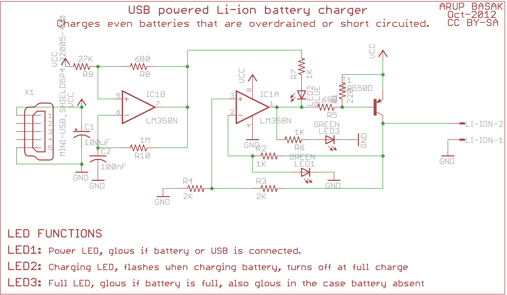

This is just an implementation of a project found on the net, but this looks so simple and interresting (we all have many li-ion battery here and there from old cell phone, this and that ...) that I'll give a shot :
http://circuitsdiy.com/projects/usb-li-ion-charger
